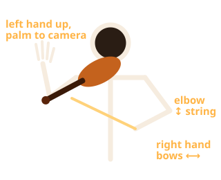

Air Violin
BodyLeft handBow hand
D4
D string
Open string
Step 1 of 3
Play a violin in the air. Your webcam watches your arms and hands and the game plays the notes.

On a phone: turn it sideways and prop it up about 1.5 m away so your upper body fits in the picture.
🔒 Your video never leaves this device. Nothing is uploaded, recorded or saved.
Press and hold a note in the table to hear it.
Turn your phone sideways (landscape) to play.